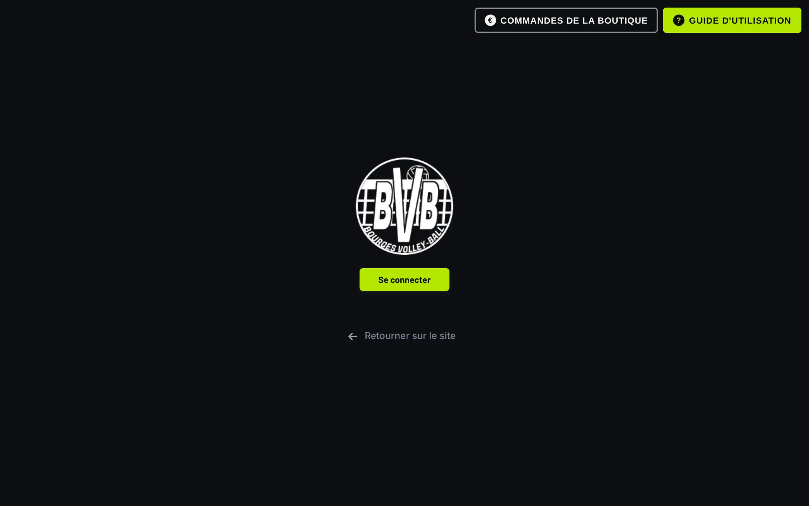
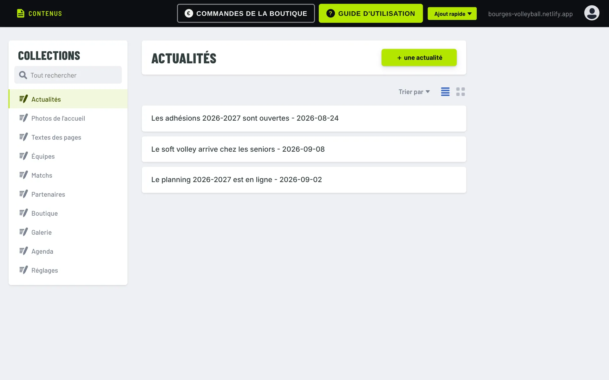
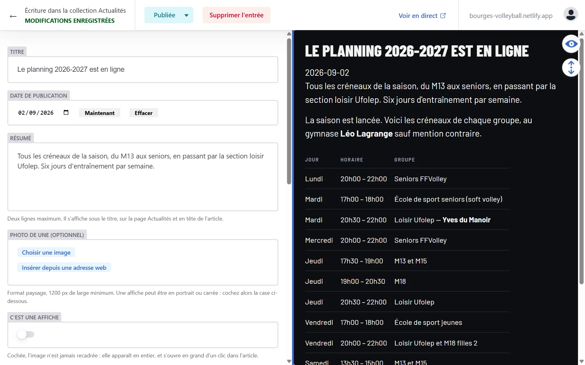
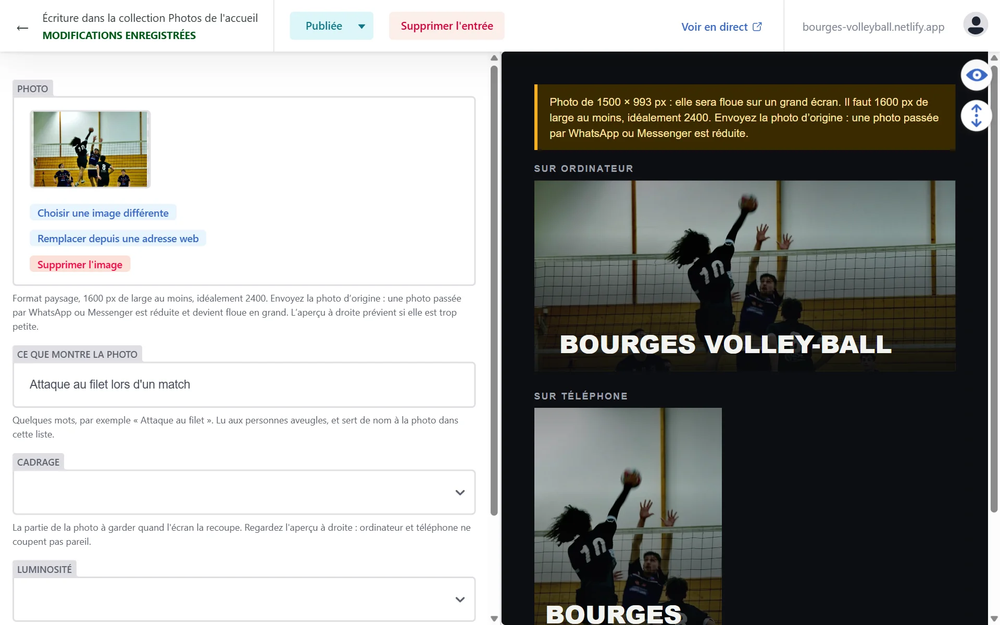
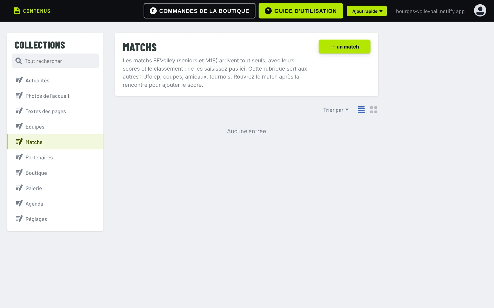
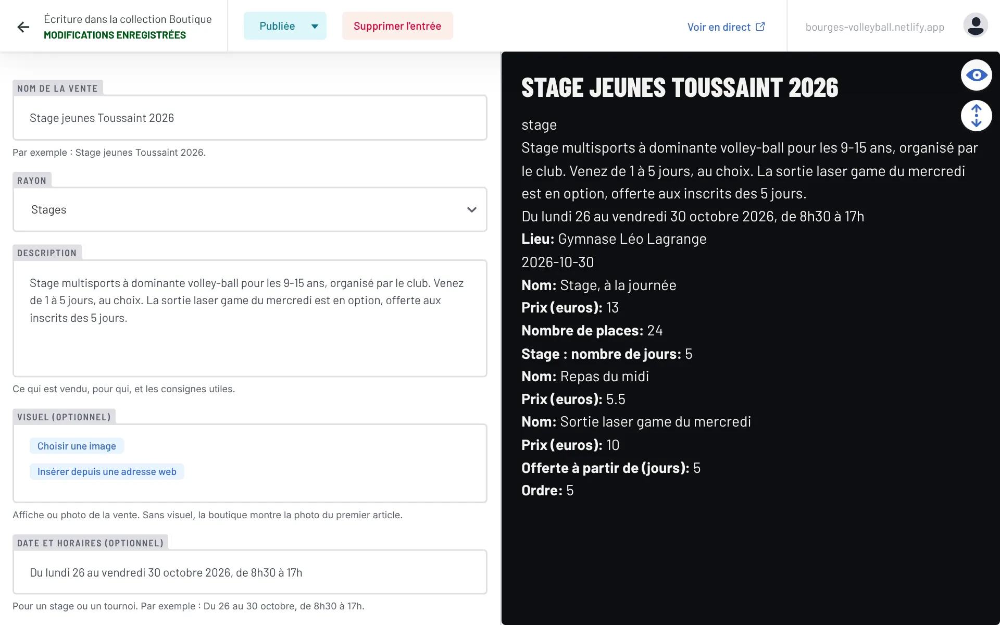
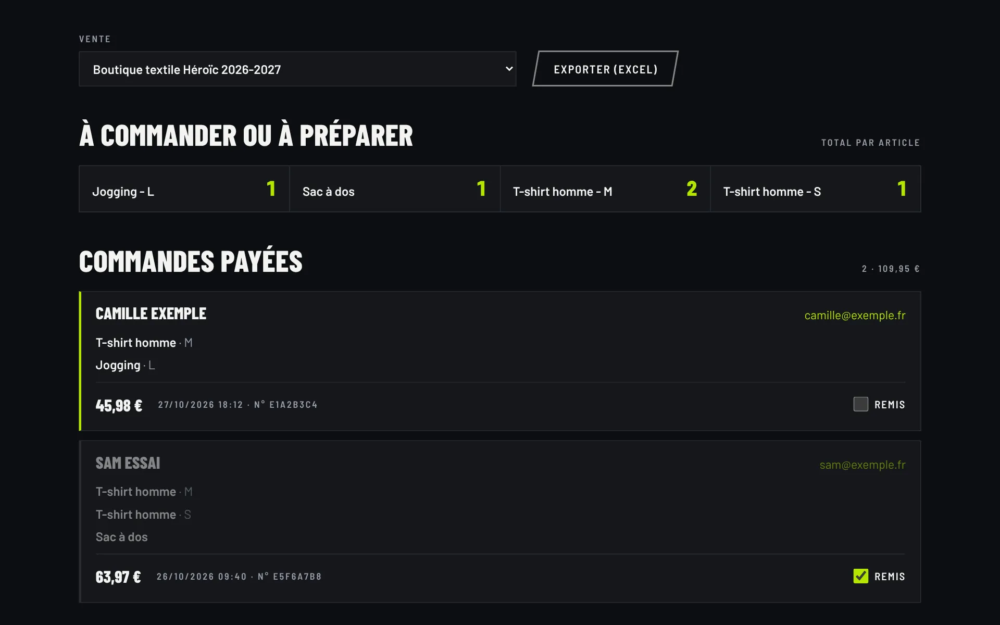

Pour les bénévoles du club
Guide de l'administration
Publier une actualité, changer les photos de l'accueil, ouvrir une vente, suivre les commandes : tout se fait depuis l'administration du site, sans rien installer. Ce guide explique comment, et ce que le site fait tout seul.
01
Comment marche le site
Le site n'a pas de base de données à surveiller ni de serveur à mettre à jour. Chaque fois que vous publiez quelque chose, le site entier est reconstruit en une ou deux minutes, puis mis en ligne.
- 1Vous écrivezdans l'administration, depuis un ordinateur ou un téléphone.
- 2Vous publiezla modification est enregistrée et gardée en mémoire : on peut toujours revenir en arrière.
- 3Le site se reconstruitchez l'hébergeur, Netlify. Comptez une à deux minutes.
- 4C'est en lignerechargez la page du site pour voir le changement.
Ce que le site fait tout seul
- Les matchs FFVolley (seniors et M18), leurs scores, le détail des sets et les classements sont repris du site de la fédération, à chaque publication et chaque lundi matin.
- Le calendrier se tient à jour : un match ou un événement passé disparaît des pages « à venir », sans que personne n'y touche.
- Les ventes de la boutique s'ouvrent et se ferment aux dates que vous avez indiquées.
- Les paiements passent par HelloAsso : le site prend la commande, HelloAsso encaisse, et la commande payée apparaît sur la page Commandes.
Bon à savoir
L'hébergement gratuit permet une vingtaine de publications par mois, mise à jour du lundi comprise. Préparez plusieurs changements avant de publier plutôt que de publier dix fois une virgule. Les photos s'ajoutent depuis le formulaire, avec Choisir une image : elles partent avec le contenu, en une seule publication. C'est pour cela qu'il n'y a pas de bouton « Media » en haut : une photo envoyée par là était publiée seule.
02
Se connecter
- Sur le site, cliquez sur le bouton Admin, en haut à côté de « Nous rejoindre » (sur téléphone : dans le menu, tout en bas). Ou ouvrez directement l'adresse du site suivie de /admin/. Aujourd'hui : bourges-volleyball.netlify.app/admin/
- Cliquez sur Se connecter, puis entrez votre adresse e-mail et votre mot de passe.

Première fois
On n'ouvre pas soi-même un compte : un responsable du club vous invite. Vous recevez un e-mail ; cliquez sur le lien, le site vous demande alors de choisir votre mot de passe. C'est fait, vous pouvez vous connecter.
Mot de passe oublié
Sur la fenêtre de connexion, cliquez sur « Forgot password? » et suivez le lien reçu par e-mail.
Message « Git Gateway Error »
Votre ancienne connexion est restée en mémoire dans le navigateur. Ouvrez l'administration dans une fenêtre de navigation privée et reconnectez-vous, ou videz le cache du navigateur.
Le guide, à tout moment
Une fois connecté, le bouton vert Guide, en haut à droite de l'administration, rouvre cette page. Le bouton Commandes, juste à côté, ouvre les commandes de la boutique.
03
Les rubriques
Une fois connecté, la colonne de gauche liste les rubriques du site. Cliquez sur l'une d'elles pour voir son contenu, ou sur le bouton vert en haut à droite pour en ajouter.

| Rubrique | Ce qu'on y fait |
|---|---|
| Actualités | Les articles de la page Actualités et de l'accueil. |
| Photos de l'accueil | Les grandes photos qui défilent en haut de l'accueil. |
| Textes des pages | Le texte d'accueil, l'histoire et le palmarès du club, les écoles de sport de la Ville. |
| Équipes | Chaque équipe : créneaux, coach, tarif, photo, effectif. |
| Matchs | Seulement les matchs hors FFVolley : Ufolep, coupes, amicaux. |
| Partenaires | Les logos et liens des partenaires. |
| Boutique | Les ventes : équipements, adhésions, stages, tournois, buvette. |
| Galerie | Les albums photo : un par tournoi, match, stage ou soirée. |
| Agenda | Les événements du club : tournois, stages, assemblée générale, soirées. |
| Réglages | Une fois par saison : les poules FFVolley suivies (voir la partie 8). |
Les commandes payées ne sont pas une rubrique : elles ont leur propre page, voir la partie 10.
04
Publier, modifier, supprimer
Toutes les rubriques fonctionnent de la même façon.
- Ajouter : bouton foncé en haut de la rubrique (« + une actualité », « + une vente »…).
- Modifier : cliquez sur l'élément dans la liste.
- Publier : bouton Publier en haut, puis Publier maintenant. Le site est à jour une à deux minutes plus tard.
- Supprimer : bouton Supprimer l'entrée en haut d'un élément ouvert.
Le formulaire est à gauche, l'aperçu à droite : il montre à peu près ce que verront les visiteurs. Sous chaque champ, une petite phrase grise explique quoi y mettre.
Pas de panique
Tant que vous n'avez pas cliqué sur Publier, rien ne change sur le site. Et ce qui est publié reste enregistré : une erreur se rattrape, même une suppression.
Sur téléphone, l'aperçu est masqué pour laisser la place au formulaire, et le bouton « Ajout rapide » aussi : chaque rubrique garde son bouton « + … ». Tout le reste fonctionne, sur téléphone comme sur tablette.
05
Les actualités

- Titre court, qui donne envie de lire.
- Date de publication : les actualités sont classées par cette date, la plus récente en premier.
- Résumé : deux lignes, affichées sous le titre et sur l'accueil.
- Photo de une : en largeur, 1200 px au moins. Pour une affiche (portrait ou carrée), cochez C'est une affiche : elle s'affichera en entier.
- Autres photos (facultatif) : jusqu'à 12 photos, en grille sous le texte, qui s'ouvrent en grand d'un clic. Idéal pour les résultats du week-end avec les photos d'équipe. Sans photo de une, la première sert de vignette dans la liste des actus. Au-delà de 12 photos, faites plutôt un album dans la Galerie.
- Brouillon : cochée, l'actualité est enregistrée mais n'apparaît pas sur le site.
- Texte : le corps de l'article. Les boutons au-dessus du champ mettent en gras, ajoutent un lien, une liste ou un tableau.
06
Les photos de l'accueil
Trois à cinq photos qui défilent en grand en haut de la page d'accueil. Ce sont les premières images que voit un visiteur : elles doivent être nettes.

Attention à la qualité
Il faut une photo d'au moins 1600 pixels de large, idéalement 2400. Une photo envoyée par WhatsApp ou Messenger est réduite et devient floue en grand : demandez le fichier d'origine au photographe (par e-mail, WeTransfer ou clé USB).
- Ce que montre la photo : quelques mots, lus aux personnes aveugles.
- Cadrage : la partie de la photo à garder quand l'écran la recoupe. Un ordinateur garde une bande en largeur, un téléphone une bande en hauteur : regardez les deux aperçus.
- Luminosité : plus claire pour une photo sombre de gymnase, plus sombre si le titre se lit mal.
- Ordre : la photo 1 passe en premier.
07
L'agenda
La page Agenda montre les événements du club : tournois, stages, assemblée générale, soirées, repas. Les matchs n'y figurent pas, ils ont leur page.
- Date et heure du début. Pour un événement sur plusieurs jours, remplissez aussi la date de fin et décochez Afficher l'heure.
- Type : tournoi, vie du club, stage ou autre.
- Lien : pour s'inscrire, mettez l'adresse de la vente dans la boutique (par exemple https://bourges-volleyball.netlify.app/boutique/tournoi-octobre-rose/). Un bouton « S'inscrire ou en savoir plus » apparaît.
Le prochain événement s'affiche en grand, les suivants sont rangés par mois. Un événement passé disparaît tout seul.
08
Les matchs
Les matchs FFVolley arrivent tout seuls : seniors masculins, seniors féminines, M18 filles et garçons, avec les scores, le détail des sets et le classement de chaque poule. Ne les saisissez pas.

La rubrique Matchs sert aux autres rencontres : Ufolep, coupes, matchs amicaux.
- Avant la rencontre : « + un match », remplissez la date, l'équipe, l'adversaire, domicile ou extérieur. Laissez les scores vides.
- Après la rencontre : rouvrez le match et ajoutez les sets gagnés de chaque côté, et si vous voulez le détail des sets.
Le nom de l'équipe compte
Écrivez-le toujours de la même façon (par exemple « Ufolep ») : c'est lui qui range le match dans le bon onglet de la page Matchs.
Chaque début de saison
En septembre, quand la FFVolley publie les poules de la nouvelle saison, il faut dire au site où trouver chaque équipe : une équipe qui monte ou qui descend change de poule, et l'adresse change avec la saison.
- Sur ffvbbeach.org, ouvrez les résultats de la ligue (ou de la fédération pour une équipe en national), puis le calendrier de la poule de l'équipe.
- Copiez l'adresse de cette page, dans la barre d'adresse du navigateur. Elle ressemble à …vbspo_calendrier.php?saison=2027/2028&codent=LICE&poule=PNM
- Dans l'administration, rubrique Réglages, ouvrez Matchs FFVolley : saison et poules et collez l'adresse dans la ligne de l'équipe. Une nouvelle équipe engagée ? « Ajouter une équipe ». Une équipe qui ne joue plus en FFVolley ? Supprimez sa ligne.
- Publiez : deux minutes plus tard, la page Matchs montre la nouvelle saison.
09
La boutique
Une vente, c'est l'équivalent d'un formulaire HelloAsso : la boutique textile, une adhésion, un stage, un tournoi, la buvette. Le visiteur choisit sur le site, paie sur HelloAsso, et revient sur le site.

Créer une vente
- Nom et rayon (équipements, adhésions, stages, tournois, buvette).
- Description : ce qui est vendu, pour qui, les consignes (date de livraison, ce qu'il faut apporter…).
- Date et horaires, lieu : pour un stage ou un tournoi.
- Ouverture et dernier jour pour commander : la vente s'ouvre et se ferme toute seule à ces dates. Sans date, elle reste ouverte (buvette).
- Demander le nom de chaque participant : à cocher pour une adhésion, un stage, un tournoi. Ajoutez au besoin des questions (téléphone, droit à l'image…), pas plus que nécessaire.
Les articles
- Un article par produit ou par tarif (« Adhésion jeune », « Adhésion adulte »…).
- Prix en euros, avec un point pour les centimes :
17.99. - Nombre de places : à remplir s'il y a une limite. Le site arrête les ventes quand c'est complet.
- Tailles : séparées par des virgules, par exemple
S, M, L, XL. L'acheteur choisit sa taille pour chaque article. - Photo : carrée de préférence, 600 px au moins. Elle s'agrandit au clic.
Un stage à la journée
Inutile de créer un article par formule (« 1 jour », « 2 jours », « 1 repas »…) : un seul article suffit.
- Prix : celui d'une journée, par exemple
13. - Jours du stage : ajoutez chaque jour, avec sa date (du lundi au vendredi pour une semaine). Chaque enfant coche les jours où il vient. Les réservations s'arrêtent pour tout le stage au dernier jour pour commander : mettez-le avant le premier jour du stage.
- Nombre de places : le nombre d'enfants accueillis par jour. Le site affiche les places restantes jour par jour, et ferme un jour complet.
- Options pour chaque participant : par exemple « Repas du midi » à
5.5, avec Comptée chaque jour cochée : un repas par jour coché. Décochée, l'option est payée une fois (une sortie, un t-shirt). - Seulement le : pour une sortie qui a lieu un jour précis, comme le laser game du mercredi. L'option ne se coche que si ce jour est coché.
- Offerte à partir de
5: l'option devient gratuite pour un enfant inscrit 5 jours.
Le parent ajoute un enfant avec +, coche ses jours, puis le repas ou la sortie, et le total se calcule tout seul. Après le paiement, le récapitulatif reprend chaque enfant avec ses jours et ses options.
Une vente, un seul endroit
Quand une vente est sur le site, fermez le formulaire HelloAsso correspondant : sinon on peut commander des deux côtés, et les places d'un stage seraient vendues deux fois.
10
Les commandes payées
Elles se consultent sur une page à part : le bouton Commandes, en haut de l'administration à côté du Guide, l'ouvre dans un nouvel onglet. Son adresse : celle du site suivie de /admin/commandes.html. Connectez-vous avec le même compte que l'administration.

- Choisissez la vente dans la liste en haut.
- À commander ou à préparer : le total par article et par taille, prêt pour la commande groupée chez l'équipementier. Pour un stage : le nombre d'enfants chaque jour, et le nombre de repas et de sorties.
- Dessous, chaque commande payée : nom, e-mail, articles, montant. Cochez Remis quand l'acheteur a reçu sa commande.
- Exporter (Excel) télécharge la liste, par exemple pour les inscrits d'un stage.
Données personnelles
Ces listes contiennent des noms, des e-mails, parfois des téléphones. Ne les transférez qu'aux personnes qui en ont besoin, et supprimez les fichiers exportés quand ils ne servent plus. Le site efface lui-même les commandes au bout d'un an.
Un remboursement se fait dans l'espace HelloAsso du club, rubrique des paiements.
Le club peut aussi recevoir un e-mail à chaque commande payée (la vente, le montant, le numéro) : c'est un réglage à faire une fois sur Netlify par le responsable du site.
11
Équipes, partenaires, textes
- Équipes : en début de saison, mettez à jour les créneaux, le coach, le tarif et la photo. L'effectif (joueurs, postes, numéros) est facultatif.
- Photo d'équipe : une photo de groupe, en largeur de préférence, 1600 px au moins. Elle s'affiche en tête de la fiche, à côté des infos de l'équipe. Une photo presque carrée est légèrement recadrée (un peu de plafond et de sol en moins) ; les joueurs restent toujours visibles.
- Partenaires : nom, niveau (principal, officiel, institutionnel), lien et logo. Un logo en PNG à fond transparent rend mieux.
- Textes des pages : le texte du haut de l'accueil, l'histoire et le palmarès du club, et les écoles de sport de la Ville (créneaux affichés sur la page Nous rejoindre ; sans créneau, la rubrique disparaît).
- Galerie : un album par événement, avec un titre, une date et ses photos. La première photo sert de couverture. Chaque photo s'ouvre en grand d'un clic, et le bouton Lancer le diaporama fait défiler les photos seules, en plein écran. Dès le premier album, la galerie apparaît dans le menu du site, en bas de page, et sur l'accueil : le bloc « Dernières photos » montre les cinq premières photos du dernier album. Mettez les plus belles en tête. 40 photos au plus par album, 6 Mo au plus par photo : choisissez les meilleures plutôt que tout verser. Comme ailleurs : des photos d'origine, et l'accord des personnes photographiées (des parents pour un enfant).
12
Les bons réflexes
- Regroupez vos modifications avant de publier : une vingtaine de publications par mois, pas plus.
- Des photos d'origine, jamais passées par WhatsApp ou Messenger.
- Demandez l'accord avant de publier la photo ou le nom d'un enfant.
- Pas de données personnelles dans une actualité : ni téléphone ni adresse de particulier.
- Vérifiez sur le site deux minutes après avoir publié.
- Un doute, un bug ? Prévenez la personne qui s'occupe du site avant de tenter une réparation.